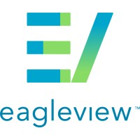

I worked as GIS Intern at Genesis Ray Energy.CReated Database for GEnRay EXplorer App.

I started as Trainee and then moved up the ladder to Geomatics Technician and then Sr. Geomatics Technician. Took care of Operations
I started here as Software DEveloper (GIS) and worked on .net core Flight MOdule. Also provided support for migration to react
I started here as Integrated Quality and Support Specialist. Worked on 3D modelling , and connected with offshore clients. Also created JIra tickets as per design requirement.